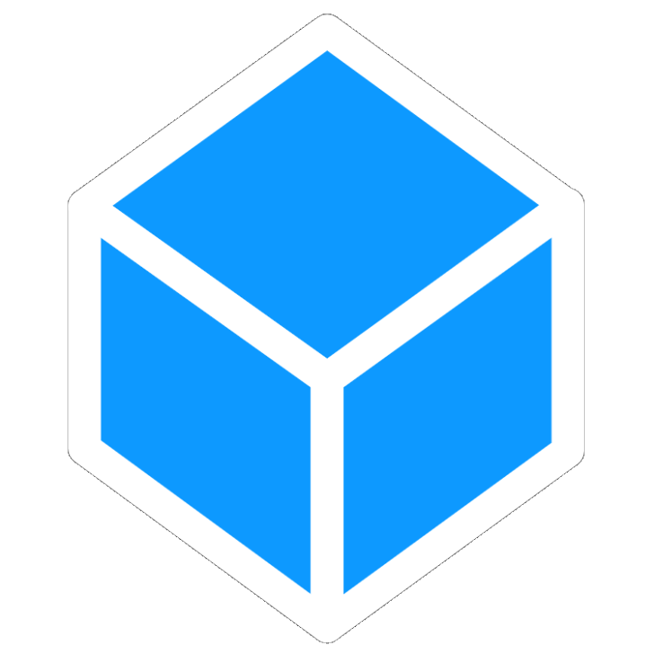
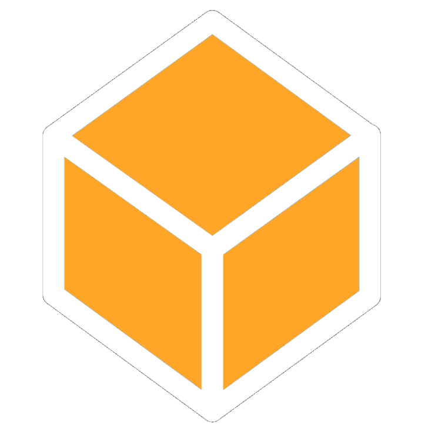

Eixos Temáticos
Nosso projeto conta com 3 Eixos Temáticos para facilitar a dinâmica do aprendizado: Computação na Escola, Competências Tecnológicas e IA na Educação. É a partir desses quatro pilares que criamos atividades e materiais. Mais informações a respeito de cada eixo podem ser encontradas no site!
Metodologia
O GEEC oferece serviços de preparo de professores para lidar com a crescente demanda pelo ensino de computação na escola. Desde de auxílio ao conduzir atividades práticas até a conscientização de novas tecnologias e uso de Inteligência Artificial, o grupo está à disposição de se deslocar até a instituição para realizar as ações.
Nossos Objetivos
O foco do projeto é levar o ensino de computação para as escolas brasileiras de maneira pedagógica, dinâmica e atualizada. Esperamos conseguir estabelecer uma conexão permanente com as escolas e oferecer suporte constante. Com isso, as escolas e professores estarão mais preparadas para lidar com os avanços tecnológicos na educação.
Sobre nós
O Grupo de Estudos de Educação em Computação (GEEC) é um projeto que foi criado em 2025 pelo Instituto de Computação (IC) da UFRJ com o intuito de aproximar a conexão entre estudantes e computação através da escola. O grupo desenvolve e organiza aulas , materiais didáticos e conteúdos relacionados à programação e ao pensamento computacional. Atualmente, o projeto conta com dois professores responsáveis pela coordenação e seis alunos participantes.

Eixos Temáticos
Nossos Eixos Temáticos organizam e orientam as ações do projeto, estruturando as iniciativas desenvolvidas ao longo to tempo. Eles funcionam como áreas de foco que permitem integrar as diferentes atividades realizadas . A definição desses eixos também facilita a comunicação com o público, tornando mais claro quais são os objetivos do projeto e as áreas de atuação que mais se adequam à necessidade de cada escola.
O eixo Computação na Escola concentra-se na inserção do ensino de computação no contexto escolar, alinhado às diretrizes da BNCC. A proposta é promover o pensamento computacional desde a educação básica, trabalhando conceitos como lógica, algoritmos e resolução de problemas de maneira acessível e contextualizada. Esse eixo busca apoiar professores e escolas na integração desses conteúdos ao currículo, contribuindo para uma formação mais atual e conectada com as demandas do mundo digital.

O eixo Competências Tecnológicas foca no desenvolvimento de habilidades práticas e criativas no uso da tecnologia. Isso inclui o estímulo à experimentação em espaços de criação, como laboratórios e oficinas, onde os estudantes podem aprender fazendo. O objetivo é fortalecer a autonomia tecnológica, incentivando não apenas o consumo, mas também a produção de tecnologia, promovendo uma formação mais crítica, criativa e participativa.

O eixo IA na Educação reúne discussões e práticas relacionadas ao uso da inteligência artificial no ambiente educacional, incluindo também a análise de dados educacionais. A ideia é explorar como ferramentas de IA podem apoiar o ensino e a aprendizagem, além de refletir sobre seus impactos, possibilidades e limitações. Esse eixo também abrange o desenvolvimento de soluções e estudos que utilizem dados para melhorar processos educacionais, sempre considerando o uso responsável e consciente dessas tecnologias.